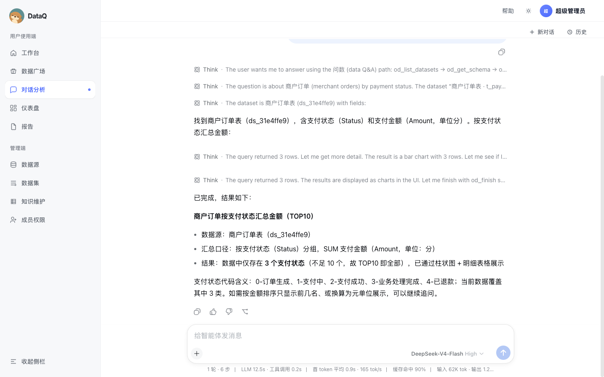
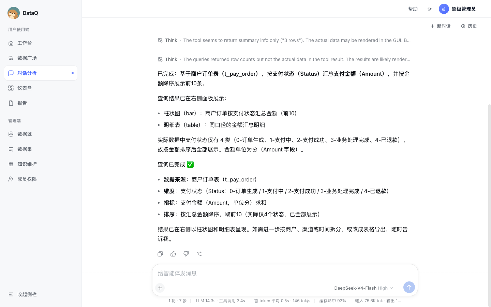
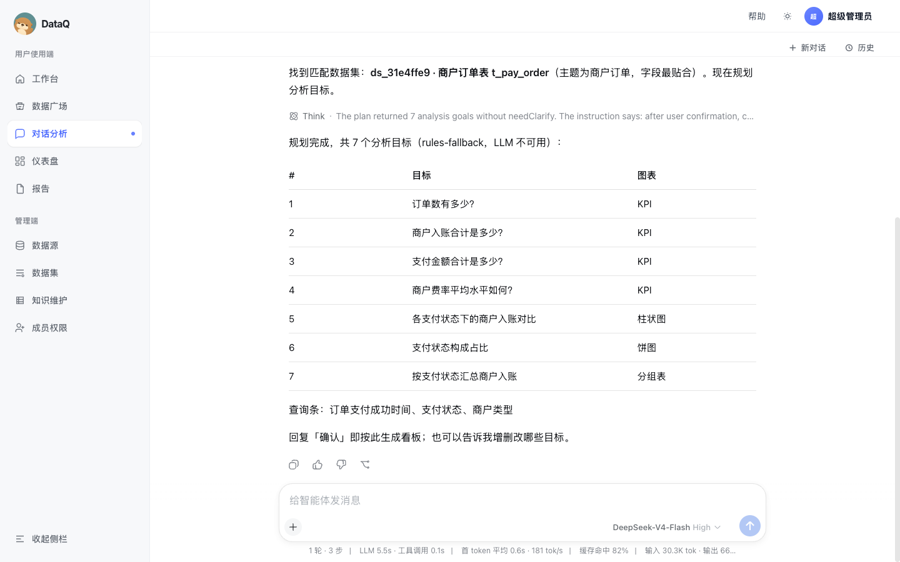
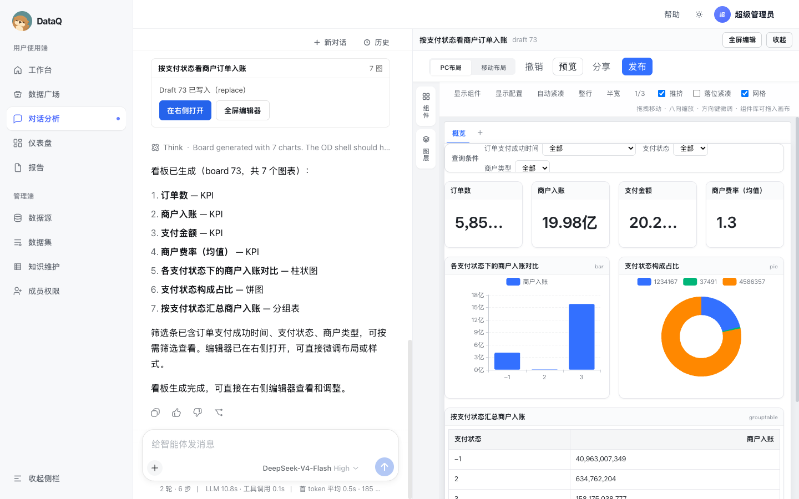
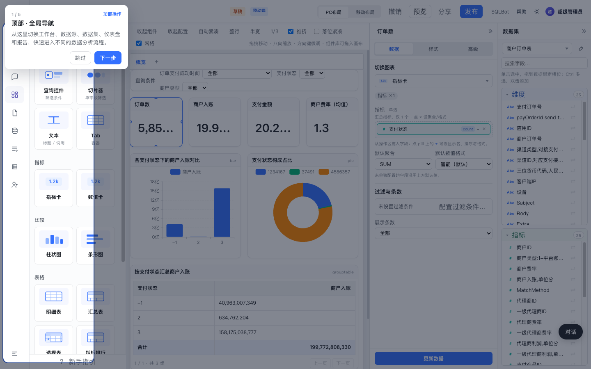
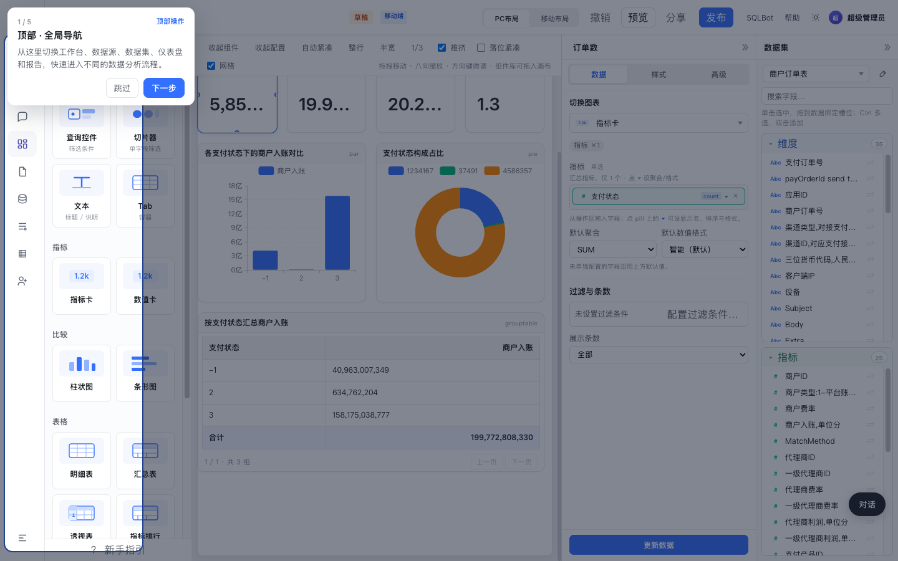

1. 操作回放（视频）
由本轮实跑截图合成的 slideshow（约 12s）。也可下载 MP4。
帧序：① 历史问数结果 → ② 本次问数完成 → ③ 出板规划确认表 → ④ 对话+右侧 draft 分栏 → ⑤ 全屏编辑器 KPI → ⑥ 柱/饼与明细表。
2. 问数（Ask）· 商户订单按支付状态汇总金额
输入：商户订单按支付状态汇总金额，取前10 · 数据集匹配 ds_31e4ffe9 · 工具约 17s · Status×Amount 约 3～4 行。


API 等价链佐证（同数据集）
| 用例 | 结果 | 要点 |
|---|---|---|
| Status×Amount SUM | pass | 3 行 · ~64ms · 采样 SQL 见 JSON |
| Status×MchIncome SUM | pass | 3 行 · 入账口径 |
| MchRate 故意 SUM | pass | 强制 SUM→AVG · 行示例 1.3 / 2.31 |
| 空结果 insight | pass | SQL WHERE 1=0 → 0 行 + insight 文案 |
| ChannelType COUNT | pass | Flashpay / INTERNAL |
3. 出板（Board）· 按支付状态看商户订单入账
命令：/board 按支付状态看商户订单入账 → plan（7 goals）→ 用户「确认」→
一次 od_generate_board → Draft 73 · 7 图 · 右侧编辑器打开。



/dashboards/73/edit · 订单数 5,858,015 · 入账 19.98亿 · 金额 20.24亿 · 费率均值 1.3
落盘图表
| # | 标题 | 类型 |
|---|---|---|
| 1 | 订单数 | KPI |
| 2 | 商户入账 | KPI |
| 3 | 支付金额 | KPI |
| 4 | 商户费率（均值） | KPI · AVG |
| 5 | 各支付状态下的商户入账对比 | 柱状图 |
| 6 | 支付状态构成占比 | 饼图 |
| 7 | 按支付状态汇总商户入账 | 分组表 |
4. 环境与结论
- 服务：FE Vite
5173· Java BI8082（UP）· dsh Web3090· PG5433 - 数据集：商户订单表
ds_31e4ffe9· 物理表t_pay_order· 60 字段 · knowledge metrics 15 / terms 72 - 问数主链路可用；费率字段走 AVG 闸；空结果有 insight
- 出板确认协议可用：plan → 确认 → 单次 generate → draft + 右侧编辑器
- 观察：本轮对话出板 plan 标注 rules-fallback（运行中的 dsh 未带 DEEPSEEK_API_KEY）；API 脚本侧带 key 时可走 LLM plan（见 JSON 报告）
机器可读明细： test-report-merchant-latest.json · Markdown： test-report-merchant-latest.md · 截图目录： test-report-assets/